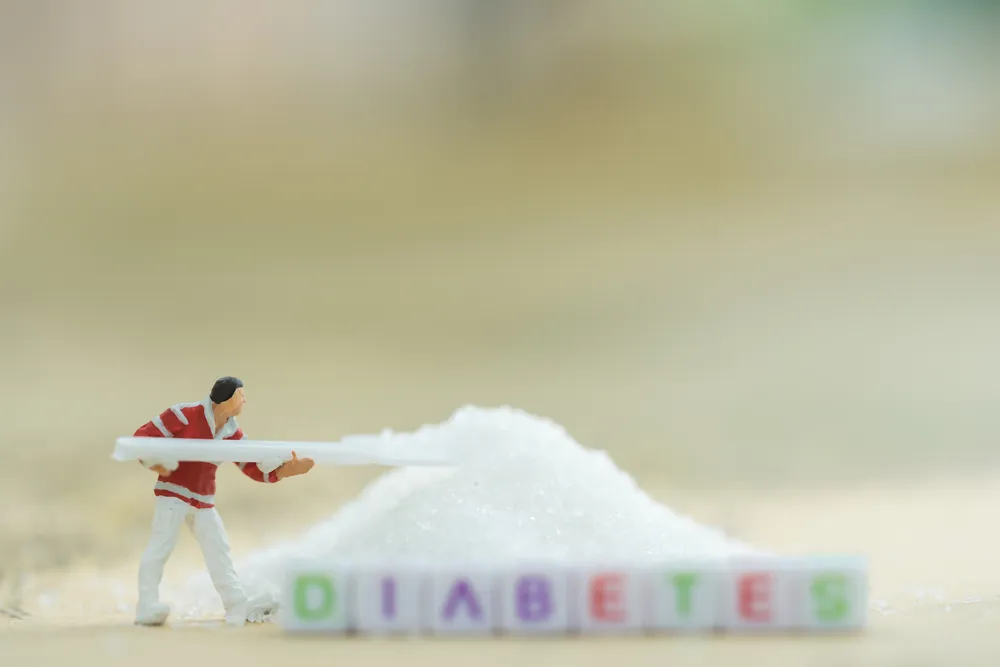

How to Avoid The Common Pitfalls of Type 1 Diabetes

Navigating a lifelong disorder like type 1 diabetes naturally comes with its share of common pitfalls. Given the nature of type 1 diabetes, most of the pitfalls tend to center around sugar and the damaging effects of mismanaged blood glucose levels. Being able to control blood glucose levels is a fundamental part of living with diabetes.
Understand How Food Affects Blood Glucose Levels
Type 1 diabetes or not, food affects everyone’s blood sugar . The key difference, however, is that people with type 1 diabetes aren’t able to naturally control the rise in glucose in the blood caused by eating food by delivering glucose to the cells to be used as energy. This results in dangerously high levels of glucose in the blood.
Different foods affect blood glucose levels differently . Specifically, carbohydrate-heavy foods typically cause levels to rise more than foods with fewer carbohydrates. Generally speaking, a meal with 50-grams of carbohydrates is going to more drastically affect blood glucose levels than a meal with 10-grams of carbohydrates. The type of carbohydrate in foods is also part of the equation. A fast-acting carbohydrate like pure sugar is going to more quickly spike blood glucose levels than a “slower” carbohydrate like sweet potato.
While carbohydrates are usually the main culprit, as determined in a 2013 study in Diabetes Care , fats can also affect blood glucose levels. It can take longer to show, starting to three hours after eating 30-grams of fat or more in one sitting, but the effect that too much fat can have on your levels can last up to six hours.
Other food-related decisions like skipping meals can also have an effect on blood glucose levels. Unlike eating food, skipping meals can cause your levels to drop. This can be equally as dangerous as having your levels rise too high, especially in cases of skipping dinner and having levels drop over the course of the night.
When you begin to understand how different food choices affect your blood glucose levels, as overseen by your doctor, you can dial in your treatment and make more educated decisions relating to what and when you eat.
Understand How Exercise Affects Your Blood Glucose Levels
Similar to the foods you eat, the type and amount of exercise you do can affect your blood glucose levels. Whereas aerobic exercise like jogging or walking may cause blood sugar levels to drop, anaerobic exercise like weight training may actually cause them to rise.
As a result, adding (or dropping) new exercise regimes to your life will often require you to adjust your diet and hormone treatment. For example, if you begin a new physical activity that causes your blood glucose levels to drop, you’ll have to eat more than you otherwise would to bring those levels back up, which requires an altered hormone dose for your body to be able to effectively use that glucose.
This is why it’s important to monitor your levels before, during, and after exercise, as well as consult your doctor before making any big changes to the amount of physical activity you perform in your life.
Understand How Other Factors Affect Your Blood Glucose Levels
Other than food and exercise, other factors that can affect your blood glucose levels to drop include:
- Alcohol
- Stress
- Hormone changes
- Periods of growth
- Illness
Any one (or combination) of these factors can cause a change in your levels. For example, drinking alcohol, especially on an empty stomach, can cause your levels to drop. This is why, in addition to staying within the American Heart Association guidelines of one drink per day for women and two drinks per day for men, people with type 1 diabetes should eat carb-containing foods while they drink.
Account for Unpredictability
You might think you have your blood glucose levels completely in check, but it’s always better to be over-monitor your levels than not monitor them enough. It only takes one unpredictable mishap to suffer the potentially life-threatening symptoms of mismanaged blood glucose levels. This is especially true when you consider all the different factors that can affect your levels , as described above.
Although your doctor will recommend a monitoring schedule for your specific situation, the American Diabetes Association recommends testing blood sugar levels before meals and snacks, before bed, before exercising or driving, and any time you suspect you may have low blood sugar.
If excessive pricking puts you off, ask your doctor about continuous glucose monitoring (CGM). CGM consists of a monitor being attached to your body using a fine needle just under the skin that checks blood glucose level every few minutes. While it’s definitely more convenient, CGM is not yet considered to be as accurate as standard blood sugar monitoring, so checking your blood sugar levels manually is usually still recommended.
Avoid Over-Correcting for Highs and Lows
It’s tempting to adjust for low blood glucose levels by eating a whole bunch of carb-heavy food, but mindless overeating can actually result in your levels swinging above and beyond where they should be. To avoid this overcompensation, Ann Feldman , a registered dietitian and certified diabetes educator (CDE) at the Joslin Diabetes Center in Boston, recommends the “15-15 rule” . It consists of eating or drinking 15-grams of a fast-acting carb (soda, fruit juice, raisins, candies, etc.) in cases where your blood sugar is 70-mg/dl or less, waiting 15-minutes, checking your levels again, and then repeating as many times as needed until your levels return to healthy range.
Similarly, over-treating with the hormone that allows glucose to be used as energy to correct for high blood glucose levels can cause levels to drop too low. In these cases, Feldman recommends giving your dose time to work and avoiding injecting another dose within three hours of the previous dose.
Source: https://activebeat.com/diet-nutrition/how-to-avoid-the-common-pitfalls-of-type-1-diabetes/